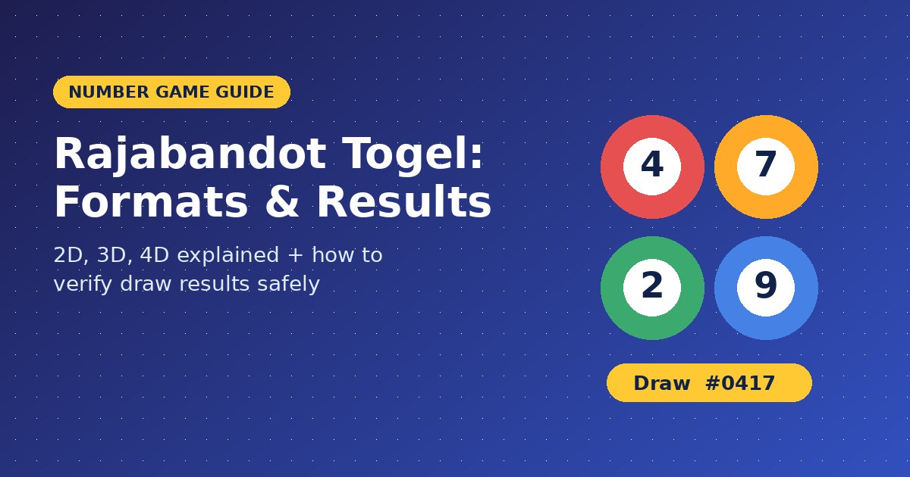
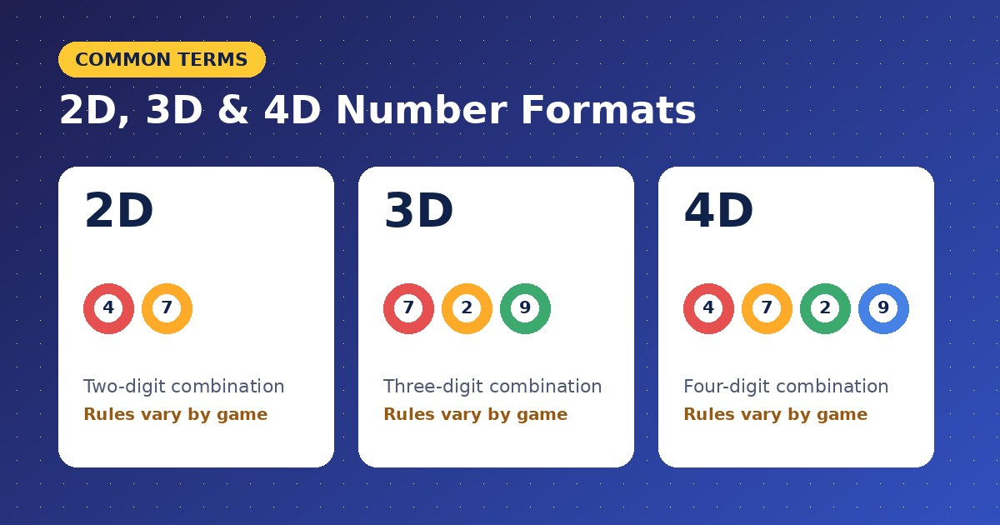
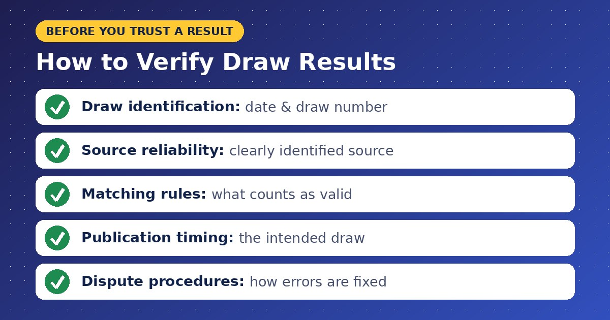

Rajabandot Togel: Understanding Number Games, Draw Formats, and Results

Online number games attract people who want to understand different draw formats, number combinations, and result systems. Rajabandot Togel is a search phrase associated with togel-related gaming information. Learning the terminology and rules can help readers evaluate the information they find online.
This guide explores common togel concepts, explains how draw results should be reviewed, and highlights important considerations when researching online gaming websites.
Understanding the Togel Concept
Togel is a term commonly associated with lottery-style number games in Indonesia. Different versions may use different number combinations, draw schedules, and prize structures.
The rules depend on the particular game and operator. Readers should therefore avoid assuming that every website offers identical formats or follows the same procedures.
People searching for Rajabandot Togel may be looking for information about number games, platform details, or result-related terminology. Understanding these basics provides a useful starting point before evaluating any website.
Common Togel Number Formats
Some togel-related games are described using the number of digits selected or matched. Common terms include 2D, 3D, and 4D.

2D Number Format
A 2D format generally refers to a two-digit combination. The applicable rules determine how the combination is selected and compared with the result.
3D Number Format
A 3D format generally involves a three-digit combination. The order of the digits and the conditions for a valid match depend on the specific game rules.
4D Number Format
A 4D format generally involves four digits. Players should read the relevant rules to understand how combinations are evaluated and how prizes, if any, are determined.
These labels describe common terminology rather than a universal set of rules. Always consult the official game documentation where available.
How to Evaluate Draw Results
Result verification is an important part of understanding any lottery-style game. A result should be checked against a reliable source and the rules applicable to the specific draw.

Consider these points when reviewing published results:
- Draw identification: Confirm the date and draw number.
- Source reliability: Look for a clearly identified source of results.
- Matching rules: Read how the game defines a valid combination.
- Publication timing: Check whether the result relates to the intended draw.
- Dispute procedures: Review the published process for correcting errors or raising concerns.
Screenshots and social media posts may be incomplete or outdated. Avoid treating an unverified result as proof of a winning combination.
What to Check When Researching Rajabandot Togel
A website's name alone does not establish its authenticity or reliability. Before using a platform associated with Rajabandot Togel, examine its domain, ownership information, policies, and applicable licensing details.
You can start your research by entering this website address into your browser:
Confirm that the address resolves to the intended website before interacting with it. Similar domain names can belong to unrelated operators, so do not assume that a website is official simply because its name resembles another service.
Review privacy terms and payment conditions carefully. Never provide confidential account information through an unverified page.
Can Number Patterns Predict Future Results?
Previous draw results may look as though they contain repeating patterns. However, past outcomes do not reliably predict future results in a fair, independent random draw.
Number prediction claims should be treated cautiously. No formula, software tool, or historical list can guarantee a winning result in a random lottery-style game.
Be especially careful with services that promise fixed profits, guaranteed wins, or secret prediction systems. Such claims require evidence and should never be accepted without scrutiny.
Responsible Participation and Legal Considerations
Lottery-style games can involve financial loss. Anyone researching gambling-related services should understand the risks before participating.
Check the legal requirements in your jurisdiction, including age restrictions and any rules governing online betting. Avoid using borrowed money, set firm financial limits, and never chase previous losses.
If a website does not clearly explain its rules, operator details, or financial conditions, it is safer to avoid depositing money until those details can be independently verified.
Final Thoughts
Rajabandot Togel is a useful search phrase for readers exploring togel terminology, number formats, and online gaming information. Understanding the difference between game formats, learning how to verify draw results, and recognizing misleading prediction claims can help readers assess online information more carefully.
Always verify the website address, review applicable rules, and prioritize privacy and responsible decision-making when researching online gaming platforms.
Related Keywords: Rajabandot Togel, togel number formats, 2D togel, 3D togel, 4D togel, togel draw results, number game guide, online gaming safety.